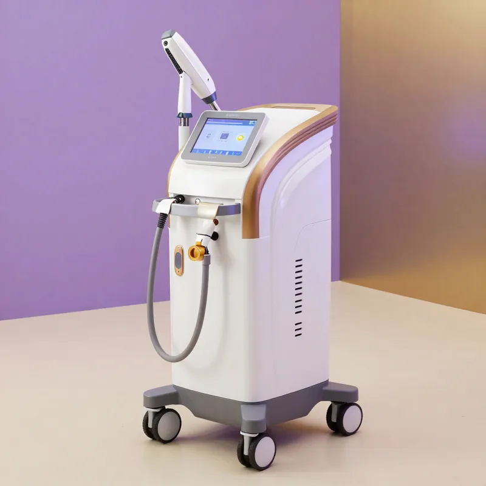
Laser Diodo 808nm
Depilazione permanente efficace su tutti i fototipi, anche scuri. Trattamento rapido e indolore.
Depilazione laser// medicina estetica · cura di sé
tu@diana:~$ oggi mi prendo cura di me
Medicina estetica, laser e rituali di bellezza in un unico studio. Prima ti ascoltiamo, poi scegliamo insieme: la prima consulenza è gratuita.
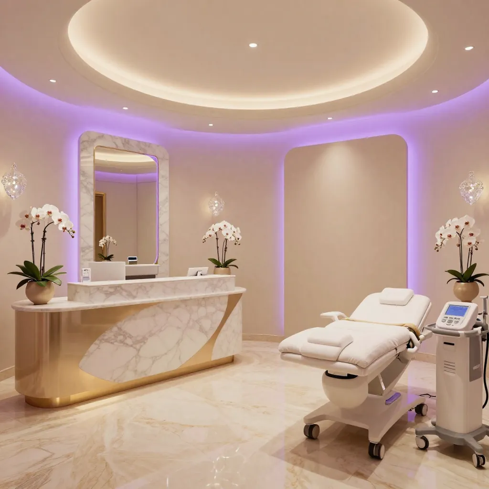
// 01 · il nostro studio
Progetto Diana nasce da una visione chiara: offrire a ogni persona un percorso di bellezza personalizzato, dove la medicina estetica e la cura del corpo si fondono in un'esperienza esclusiva e consapevole.
Il nostro centro unisce la competenza medica ai trattamenti estetici più avanzati, in un ambiente curato, accogliente e rigorosamente professionale. Ogni trattamento è preceduto da una consulenza approfondita per garantire risultati autentici e duraturi.
Ogni percorso è guidato da professionisti qualificati con formazione medica specializzata.
Nessuno lo nota, ma tutti vedono la differenza.
Solo apparecchiature certificate di ultima generazione.
Dal viso al corpo, dall'estetica alla medicina: tutto in un unico centro.
// 02 · i trattamenti
Dalla medicina estetica ai trattamenti beauty: un universo completo di cura. Tocca una scheda per scoprire i dettagli.
Nessun trattamento trovato. oppure chiedici un consiglio.
// 03 · il tuo rituale
Non sai da dove partire? Rispondi d'istinto: ti suggeriamo i trattamenti più vicini a quello che cerchi. Poi, in consulenza, lo costruiamo insieme.
scelto per te
È un suggerimento, non una diagnosi: la parola finale spetta alla consulenza con i nostri medici.
// 04 · apparecchiature
Investiamo costantemente nelle migliori tecnologie certificate, per offrire trattamenti sicuri, efficaci e all'avanguardia.

Depilazione permanente efficace su tutti i fototipi, anche scuri. Trattamento rapido e indolore.
Depilazione laser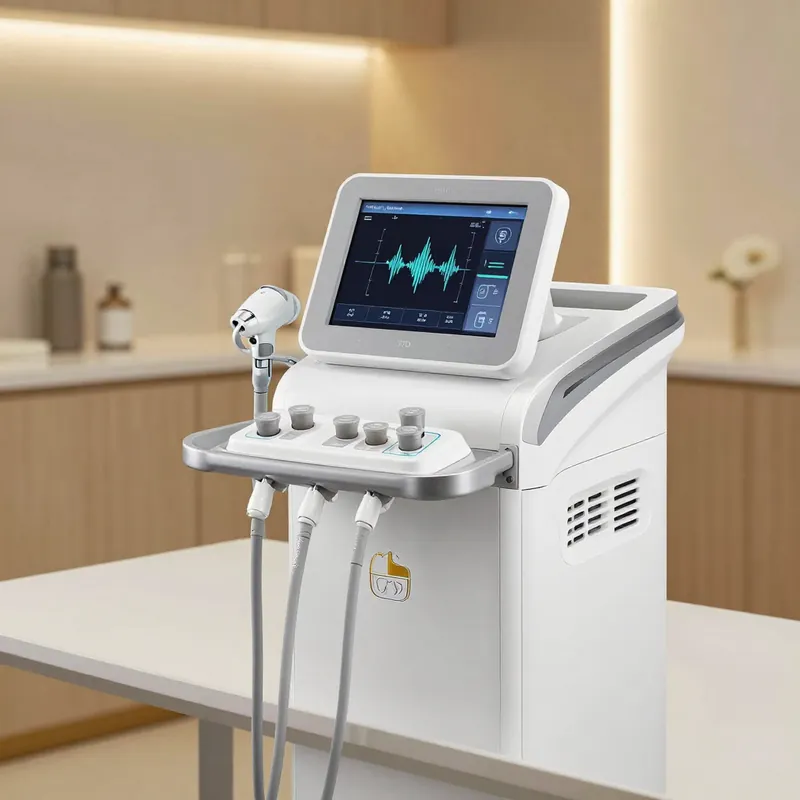
Ultrasuoni focalizzati ad alta intensità per il lifting viso e corpo.
Lifting non invasivo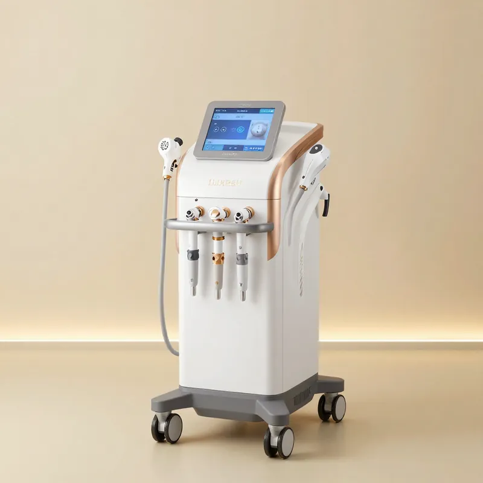
Tecnologia a più poli per un riscaldamento uniforme e profondo.
Rassodamento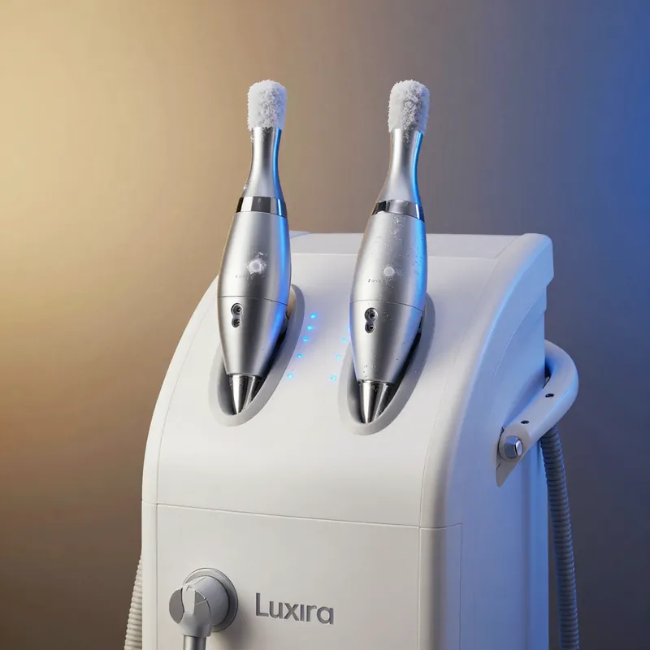
Doppio applicatore per trattare due zone insieme. Fino al 27% di riduzione del grasso.
Corpo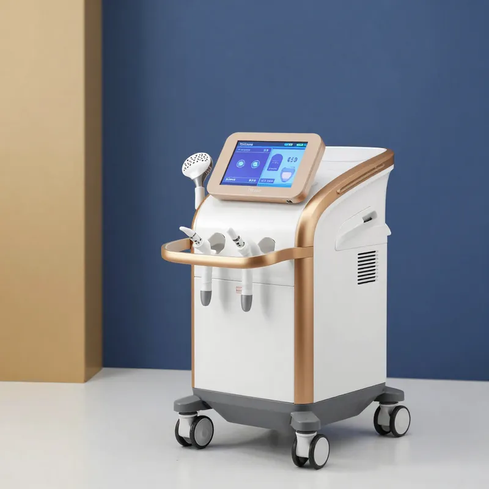
Ultrasuoni per le cellule adipose. Ideale per cellulite e localizzazioni.
Anti-cellulite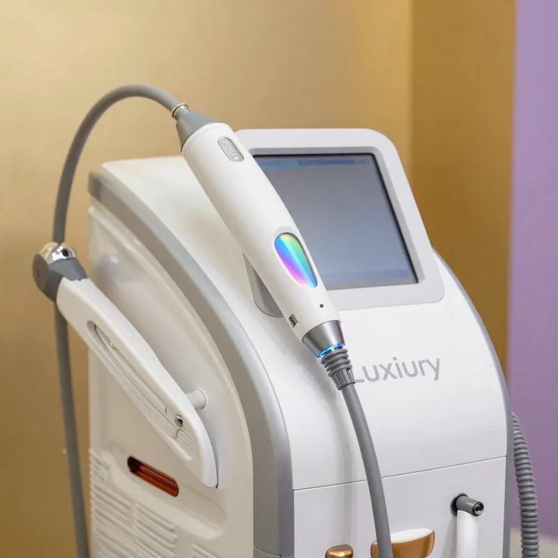
Macchie, couperose e foto-ringiovanimento. Pelle uniforme e luminosa.
Foto-ringiovanimento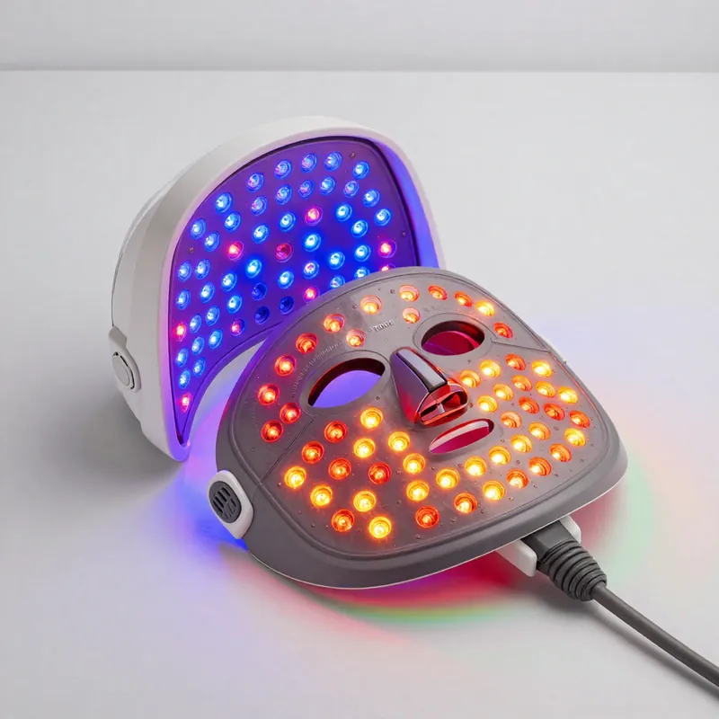
Pannello LED con lunghezze d'onda specifiche per ogni esigenza cutanea.
Fototerapia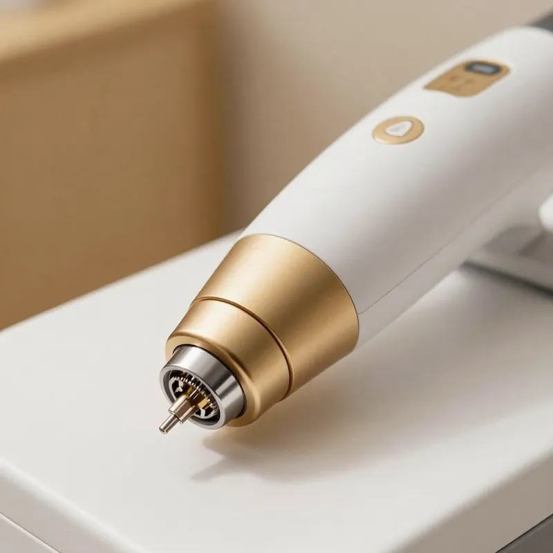
Microaghi e radiofrequenza per un rinnovamento cutaneo profondo e sicuro.
Ringiovanimento// 05 · un minuto per te
La cura di sé comincia da qui, ed è gratis. Scegli un ritmo, segui la perla con il respiro e regalati un minuto di calma. Funziona anche in pausa pranzo.
// 06 · il metodo
Ogni persona è unica. Per questo lavoriamo in quattro fasi che portano a risultati personalizzati e duraturi.
Analizziamo la tua pelle, il tuo stile di vita e i tuoi obiettivi. Sempre gratuita e senza impegno.
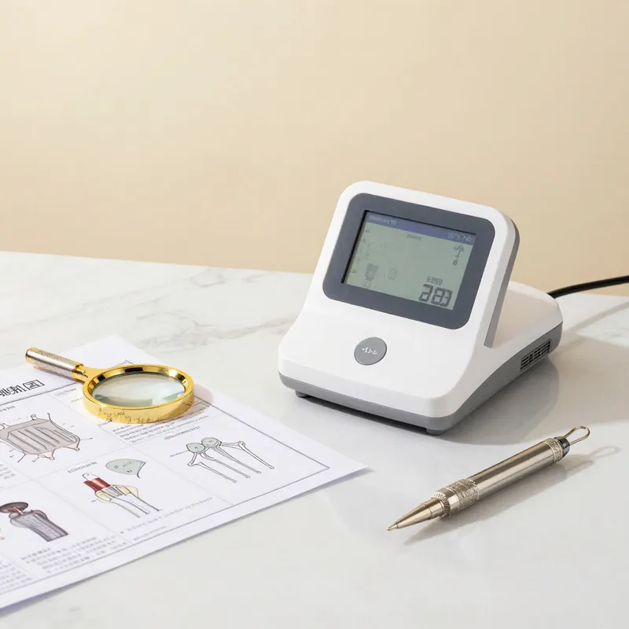
Strumenti diagnostici professionali per valutare la pelle e scegliere il trattamento più adatto.
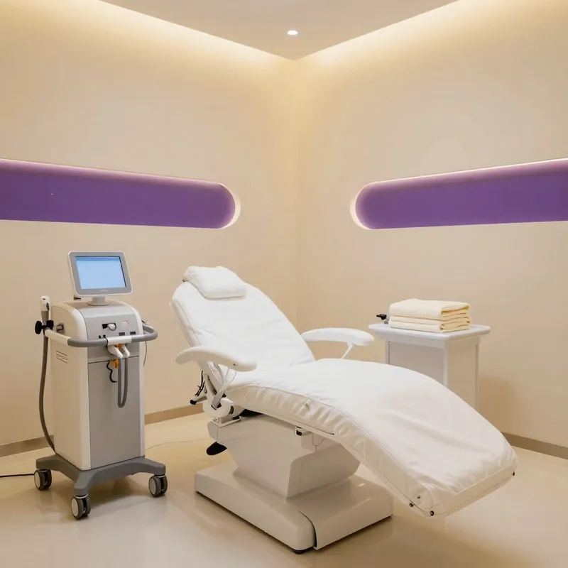
Il protocollo su misura, con le tecnologie più avanzate, nel massimo comfort e sicurezza.
Ti seguiamo nel tempo con controlli e consigli per mantenere e amplificare i risultati.
// 07 · trasformazioni
Ogni risultato racconta una storia. Le nostre clienti ci affidano la loro bellezza e noi la valorizziamo con cura e competenza.
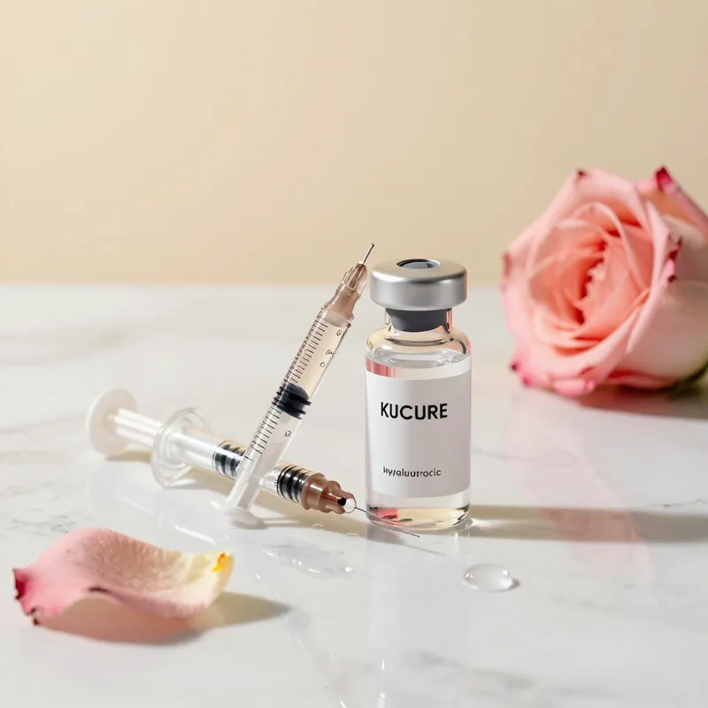
Risultato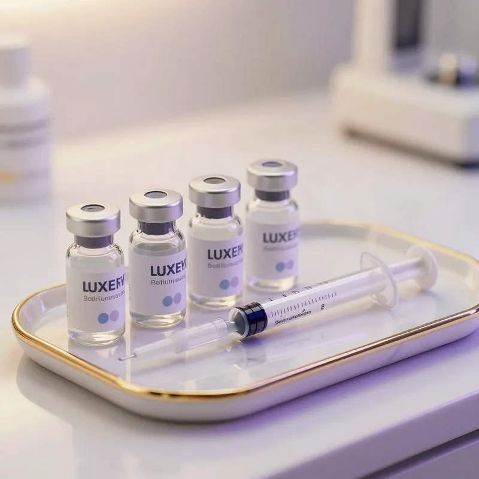
Risultato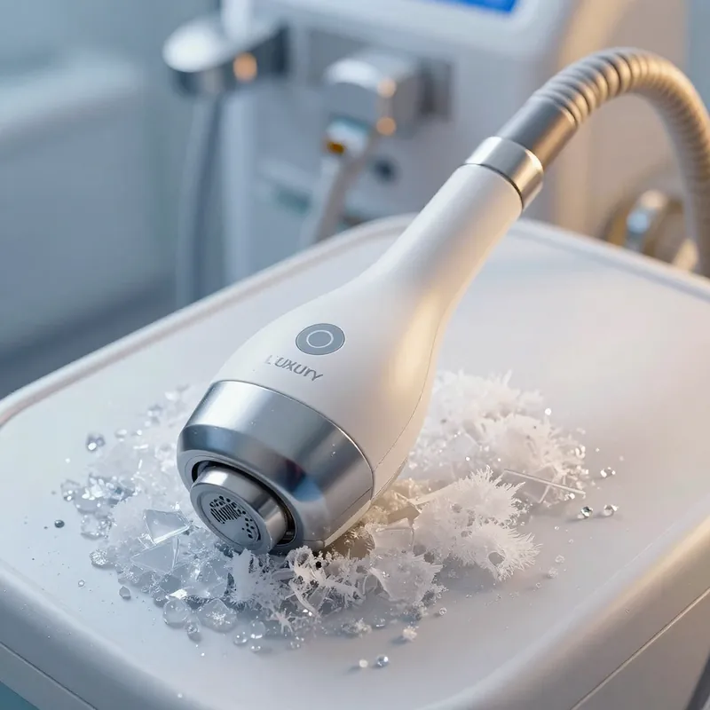
Risultato// 08 · recensioni
Ho fatto il filler alle labbra e il risultato è naturale e bellissimo. La dottoressa mi ha ascoltata, capito cosa volevo e ha rispettato i miei desideri senza esagerare. Finalmente un centro dove si lavora con etica!
Ho provato la criolipolisi sull'addome dopo anni di tentativi con diete e palestra. In 6 settimane la differenza è impressionante. Staff professionale e ambiente elegante. Lo consiglio a tutte!
Il microblading che mi hanno fatto è perfetto. Le sopracciglia sembrano vere, disegnate da un'artista. L'estetista è stata precisa, paziente e mi ha guidata nella scelta della forma più adatta al mio viso.
// 09 · il team
Medici, estetiste e specialisti formati con i migliori standard internazionali, appassionati di bellezza e sempre aggiornati.
Medico Estetico — Direttrice
Specializzata in medicina estetica con oltre 10 anni di esperienza. Master in tecniche iniettive e ringiovanimento non invasivo.
Estetista Senior — PMU Artist
Esperta in trucco semipermanente, extension ciglia e trattamenti viso. Certificata dalle principali scuole europee di estetica avanzata.
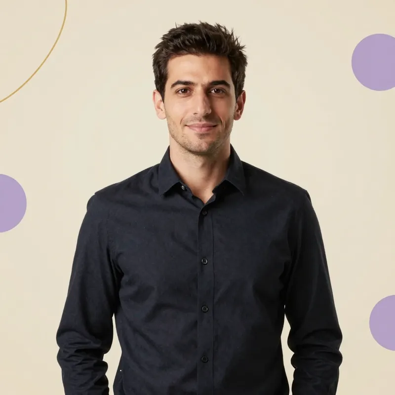
Responsabile Infrastruttura
Gestisce e sviluppa l'infrastruttura digitale e tecnologica del centro. Garantisce che ogni sistema funzioni in modo sicuro ed efficiente.
// 10 · domande frequenti
Le risposte alle domande che ci fanno più spesso. Per tutto il resto c'è la consulenza, gratuita.
Chiedi a noiIl trattamento è quasi indolore (si usa un ago sottilissimo) e, se eseguito da un medico esperto con le dosi corrette, il risultato è naturale. Non si "blocca" il viso: si riduce selettivamente il movimento delle rughe senza compromettere l'espressività.
Dipende dall'area trattata e dal prodotto utilizzato. In media il filler alle labbra dura 6-12 mesi, quello agli zigomi 12-18 mesi. L'acido ialuronico è riassorbibile, quindi il trattamento è reversibile.
Il nostro laser diodo 808nm è efficace su un ampio range di fototipi e peli. I peli scuri rispondono meglio al trattamento. Per i peli molto chiari o biondi valutiamo in consulenza la soluzione più adatta.
Nella maggior parte dei casi basta una seduta per zona per una riduzione visibile fino al 27% del grasso. Per più zone o accumuli maggiori pianifichiamo un ciclo personalizzato.
Applichiamo una crema anestetica prima del trattamento per ridurre il fastidio. Il microblading dura in media 1-2 anni a seconda del tipo di pelle. Il ritocco dopo 4-6 settimane è incluso nel prezzo.
Sì: per i trattamenti medico-estetici la consulenza preliminare è obbligatoria e gratuita. È il momento in cui valutiamo insieme le tue esigenze, analizziamo la pelle e definiamo il percorso più adatto a te.
// 11 · contatti e prenotazioni
Prenota la tua consulenza gratuita. Siamo qui per ascoltarti e guidarti verso la versione migliore di te.
Abbiamo preparato il tuo messaggio. Scegli come inviarlo: ti rispondiamo entro 24 ore.